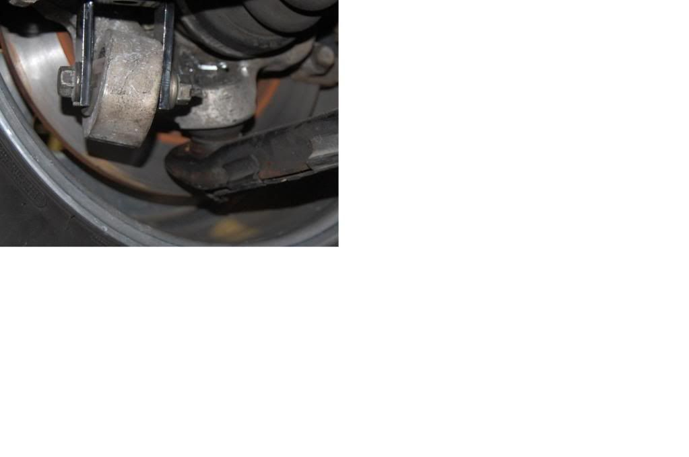

-
Well everything was fine until I got to clearing the "traction" arm mount(the tall one). It needed removal of the brake hose bracket and frame notching and roof clearance. Only thing I hammered in was the floor board to clear the hump in the frame.Praying.... -
Completed!
Gusseted S14 Subframe, SPL S13 RUCA's, Traction, and Toe links, S14 RLCA's, S13 Spindles, and 5 Lug hubs. Empty S14 differential and no axles. Still deciding whats the best to do here. Need something strong!!!
Used Butter's idea of an aluminum blank in the subframe and a bracket that bolts to the stock stud and then uses 4 through bolts to bolt to the aluminum blank. I originally threaded the aluminum blank to accept 8 bolts (4 through the top and 4 through the bottom) but was worried about the threading in the aluminum and stressing the blank with the holes. I decided a bolt from the top with self locking nut on the bottom. The rear uses S13 spike thingy using a C bracket that cradles the rear cross beam.
Notching of the frame rails was required. I need to put coilovers and set it at ride height and determine if the SPL arms are going to make any contact. Pic will come, just like the other pictures, when the car is done.The bullshit stops, when the GREEN light drops.
Only babies cry about the bottle. -
You can make a simple extender instead of getting a whole new drive shaft made.Butter wrote:
I don't see how you can use the stock z31 in this manner since 240sx has a short nose carrier and you need a much longer dshaft. I can't see any of the pics.85 Z31 6.0 LSX turbo 766whp/792wtq
04 GTO, LS6, big cam, porting, N20… underway for summertime daily driver. -
Has anyone else done this with a z32TT knuckle/different bottom rear shock mount? mine is at what looks to be an extreme angle.
also anyone know of part numbers for energy suspension (or similar) bushing's in the knuckle? not looking for arm bushings those will be solid.
ThanksPraying.... -
Kens pic's doesnt show this kind of angle1SickZ wrote: Has anyone else done this with a z32TT knuckle/different bottom rear shock mount? mine is at what looks to be an extreme angle.
also anyone know of part numbers for energy suspension (or similar) bushing's in the knuckle? not looking for arm bushings those will be solid.
Thanks
heres a pic:

this might be a difference between the Q knuck;e and the Z knuckle. im not sure.Praying.... -
Hey 1SickZ,
I haven't used the Z32TT knuckle yet, although I was going to get a pair to use on my S13 subframe. Still acquiring parts, so haven't considered any other knuckle as I'm doing both the S13 subframe and the Q45/Z32TT half-shaft conversion.
By the way, I haven't done any welding before. What type of welding are you doing to get these plates fixed in place in order to bolt up your subframe?My Project '88 Z31 To Do List:
S13 rear subframe,
'91 Q45 R200 diff,
'91 Infiniti VH45DE,
Z33 6-speed transmission
Custom wire harness
-
weird question guys but i was wondering if any of you could count the splines on the output shafts of the z32 that go into the r230 diff?"Its the s12's sexy over weight step daughter, the z31" -
nismopu wrote: weird question guys but i was wondering if any of you could count the splines on the output shafts of the z32 that go into the r230 diff?
Check this link out…
http://www.240sxforums.com/forums/do…-subframe.html
The following was taken from the 240sxforums site, as I understand one has to register to access the above link....
First off, I'd like to start out by thanking the staff at Matchless Performance in Carrollton, TX (Dallas) for providing the install photos and labor.
While there is information about this swap on the web, I wanted to provide a concise photo step-by-step install guide for the members.
After installing the Mazworx Drag Axles, and blowing both of the Mazworx modified factory 240sx 29-spline output shafts on the first pass, I found myself looking for upgraded output shaft options.
After talking to SMRacing on FA, he told me about the Q45 differential and the stoutness of this piece.
The 90-96 Q45 (R200) features the same beefy 6-bolt 30-spline axles, hubs, and output shafts used in the 90-96 Nissan 300ZX TT (R230).
All Infiniti Q45's came with VSLD differentials, making this a great upgrade for those looking to upgrade to R230 durability without having to modify the S13/S14 subframe.
The 90-96 Q45 had a 3.54 final gear, and the 97-01 had a 3.69.
The swap is VERY easy to do, and is a rather bolt-in affair using the S13 or S14 differential cover from your current differential.
Parts list needed:
A.) (Your Model S13 or S14) differential cover
B.) Q45 VLSD differential
C.) Q45 or 300ZX TT Wheel Hubs (great upgrade for the 4-lug guys who have been looking for a reason to go 5-lug)
D.) 300ZX TT Driver Side Axle (installed on driver side of 240SX) and Infiniti Q45 Driver Side Axle (installed on passenger side of 240SX).My Project '88 Z31 To Do List:
S13 rear subframe,
'91 Q45 R200 diff,
'91 Infiniti VH45DE,
Z33 6-speed transmission
Custom wire harness
-
Should be 31 should it not? I don't think anyone in this thread is using the 230 diff though. 1sickZ is using the Q45's R200.nismopu wrote: weird question guys but i was wondering if any of you could count the splines on the output shafts of the z32 that go into the r230 diff?85 Z31 6.0 LSX turbo 766whp/792wtq
04 GTO, LS6, big cam, porting, N20… underway for summertime daily driver. -
i didnt go the route with the plates that was someone else. i just simply extended the 240 fram a bit so it can be removed and replaced like factory style.Ford Falcon wrote: Hey 1SickZ,
I haven't used the Z32TT knuckle yet, although I was going to get a pair to use on my S13 subframe. Still acquiring parts, so haven't considered any other knuckle as I'm doing both the S13 subframe and the Q45/Z32TT half-shaft conversion.
By the way, I haven't done any welding before. What type of welding are you doing to get these plates fixed in place in order to bolt up your subframe?
I'm still trying to find the differences in the q knuckel vs the tt knuckle. they are identical but im not sos ure the angle of the shock bushings is. ill chime in once i get proof.Praying.... -
You're right. I was thinking of a thread from the 300zxclub forum. He had fabbed a plate and welded it to the crossbeam. I notice that the point on the beam where the rear mounting point for the S13 subframe isn't level.1SickZ wrote:
i didnt go the route with the plates that was someone else. i just simply extended the 240 fram a bit so it can be removed and replaced like factory style.
I'm still trying to find the differences in the q knuckel vs the tt knuckle. they are identical but im not sos ure the angle of the shock bushings is. ill chime in once i get proof.
I'm curious to find out what would be the better way to secure it, using a 5/16" plate of steel, a 1" block of aluminum (as Ken used), or to box the crossmember.My Project '88 Z31 To Do List:
S13 rear subframe,
'91 Q45 R200 diff,
'91 Infiniti VH45DE,
Z33 6-speed transmission
Custom wire harness
-
I just extended the front mounts with some bar stock, and the back I used some steel plates up top with some round bar stock through the floor and beam into the solid rear mount with threads on the end to bolt up done and done!
I don't know about the Q45 knuckle but, the s13 and z32 are almost identical except the shock mounts being different style!88na2T-s13,q45 swap 12.6@110mph
87T 2+2 auto,stock -
I boxed it.Ford Falcon wrote:
I'm curious to find out what would be the better way to secure it, using a 5/16" plate of steel, a 1" block of aluminum (as Ken used), or to box the crossmember.Praying.... -
DMANN wrote: I don't know about the Q45 knuckle but, the s13 and z32 are almost identical except the shock mounts being different style it is not on a angle!
ok the q45 uprights are identical to the z32TT uprights. the only diff is the hicas bushing in the z32arm otherwise the q45 is identical. whats going on here is those of you using the s13 upright with the bolt are just bolting your shock in and the shock moves on the bolt so there is no obvious angle from s13 to Z31 mouting. with the z32 mount you can clearly see the angle required for using the factory z31 mounting the shock. what im going to do to offset this is move my top shock mount forward some to match the lower mount more. the only benefit of these aluminum uprights is about 5 lbs less per side(unsprung).Praying.... -
I'm looking for a pair of Z32TT rear knuckles as well. Do you think it's possible to heat up and adjust the mounting points on those so the struts will line up properly? I would imagine it would be expensive to do. Also, are you all using Z32 rear struts with this mod, or has anyone found any others that with work with the mounting point on this knuckle?My Project '88 Z31 To Do List:
S13 rear subframe,
'91 Q45 R200 diff,
'91 Infiniti VH45DE,
Z33 6-speed transmission
Custom wire harness

Copyright © 2006–. All rights reserved. Privacy Policy